01
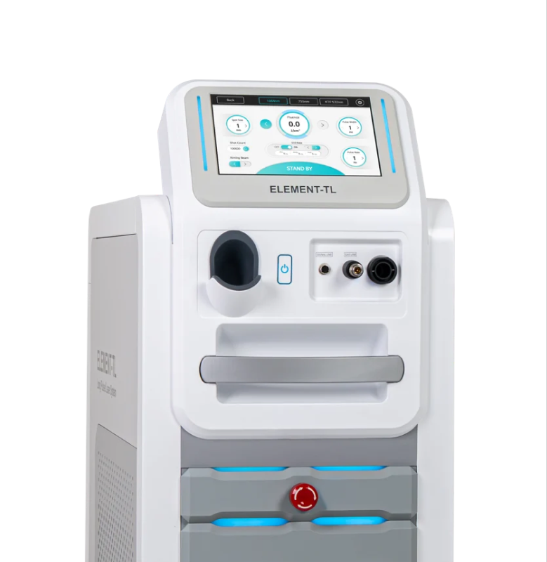
Platform
3파장 통합 본체
1064nm · 755nm · 532nm 레이저를 한 대의 본체에 구성했습니다. 장비 한 대로 세 파장을 운용해 별도 장비를 늘리지 않아도 됩니다.
1064 · 755 · 532nm 레이저를 한 대의 본체에 구성
단일 플랫폼통합 핸드피스
HOME › 제품소개
멀티 파장 롱펄스 레이저 시스템
Product Overview
엘레멘트티엘 Gen2는 1064nm Nd:YAG, 755nm Alexandrite, 532nm KTP 세 가지 레이저 파장을 하나의 장비에 구성한 롱펄스 레이저 시스템입니다.
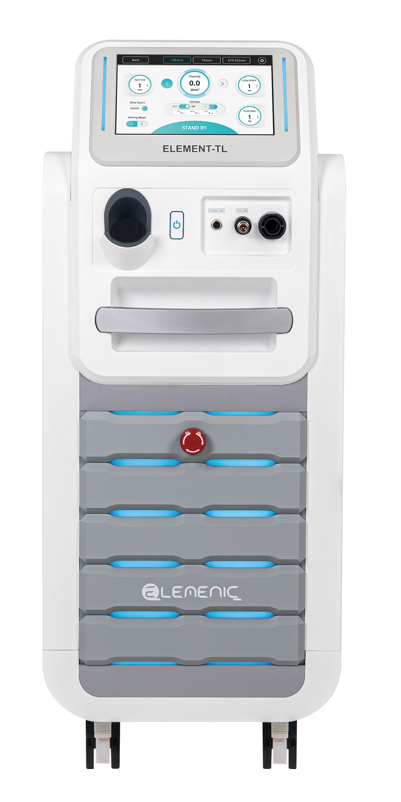
What's new in Gen2
제모 시술 효율에 초점을 맞춘 2세대 모델
핸드피스 스팟 크기를 최대 24mm까지 키워 한 번에 넓은 면적을 조사합니다.
제모 조사 속도를 초당 2회에서 3회로 높였습니다.
8시간 이상 연속 가동할 수 있어 시술이 몰리는 날에도 안정적으로 운용합니다.
출처: 보건신문 2026.10.23 보도 (제조사 발표 기준)
Core Structure
세 파장 · 스팟 조절 · 냉각이
실제 장비 어디에서 어떻게 작동하는지 정리했습니다.

Platform
1064nm · 755nm · 532nm 레이저를 한 대의 본체에 구성했습니다. 장비 한 대로 세 파장을 운용해 별도 장비를 늘리지 않아도 됩니다.
1064 · 755 · 532nm 레이저를 한 대의 본체에 구성
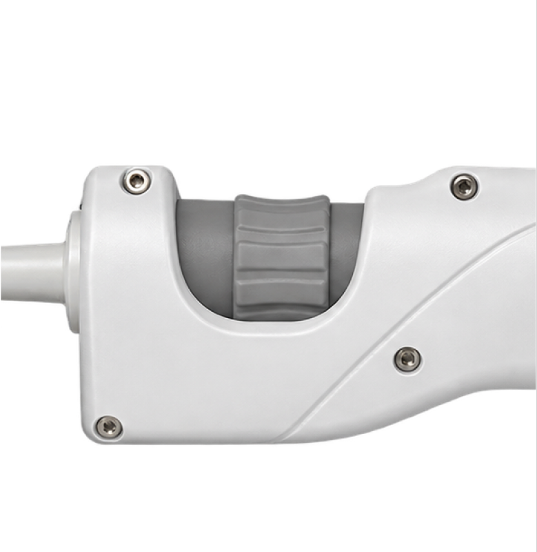
Instant Zoom Spot
핸드피스 손잡이의 줌 링을 돌려 스팟 크기를 조절합니다. 팁을 바꾸지 않고 시술 부위 면적에 맞춰 조사 범위를 바로 바꿉니다.
줌 링을 돌려 팁 교체 없이 스팟 크기 조절
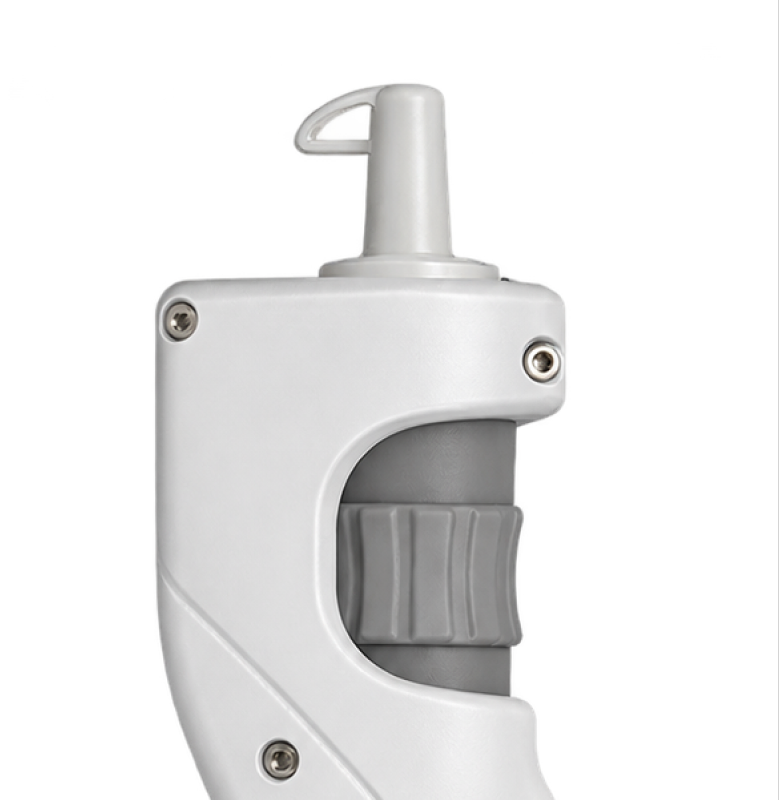
SCD Cooling
핸드피스 끝단에 있는 냉각 분사구에서 조사 직전 냉매를 짧게 분사해 피부 표면을 먼저 냉각합니다. 냉각과 조사가 하나의 흐름으로 연계되어 작동합니다.
핸드피스 끝단 분사구에서 조사 직전 냉매를 분사해 피부 표면을 먼저 냉각
Wavelength Comparison
레이저 매질 · 파장 영역 · 도달 피부층을
한눈에 비교합니다.
KTP가시광선 · Green
532nm
세 파장 중 가장 짧은 파장으로, 상대적으로 얕은 층에 작용합니다.
Alexandrite근적외선 · NIR
755nm
가시광선 경계에 가까운 근적외선 파장으로, 중간 깊이에 작용합니다.
Nd:YAG근적외선 · NIR
1064nm
세 파장 중 가장 긴 파장으로, 상대적으로 깊은 층까지 도달합니다.
* 도달 피부층은 파장별 일반적인 광학 특성을 기준으로 한 표기이며, 실제 작용 깊이는 조사 설정 · 스팟 크기 · 피부 상태에 따라 달라집니다.
Applications & Clinical Reference
제조사 제품 카탈로그에 수록된 임상 적용 기록입니다.
사례별 파장 · 조사 설정 · 치료 간격 · 촬영 시점을 원문 그대로 옮겼습니다.
1064nm755nm
털의 굵기 · 색, 피부 톤에 따라 파장 선택
532nm1064nm
혈관의 굵기와 깊이에 따라 파장 선택
532nm755nm
색소의 깊이 · 범위에 따라 파장과 스팟 조절
4 Cases
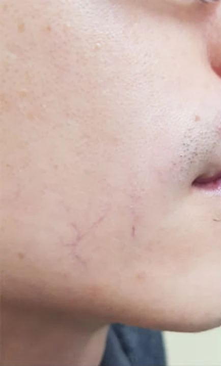
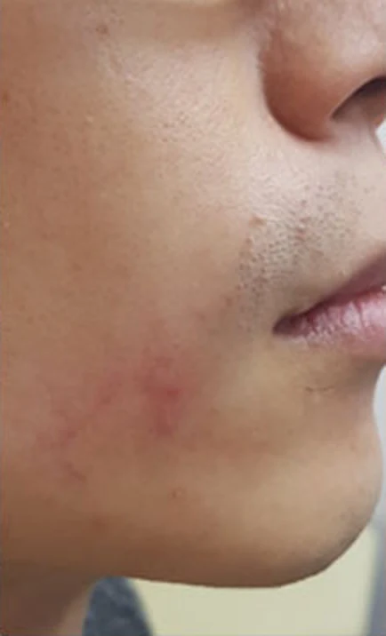
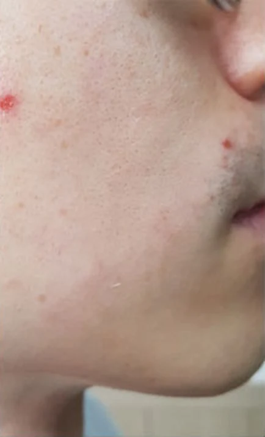
CASE 01Vascular
532nm KTP
| Wavelength | Spot | Pulse | Fluence |
|---|---|---|---|
| 532nm | 5mm | 5ms | 8J |
Note시술 후 반응이 강하게 나타난 경우 아이스팩 · 냉습포로 진정한 기록이 함께 있습니다.
Source — 제조사 카탈로그 「임상적용 4-2」
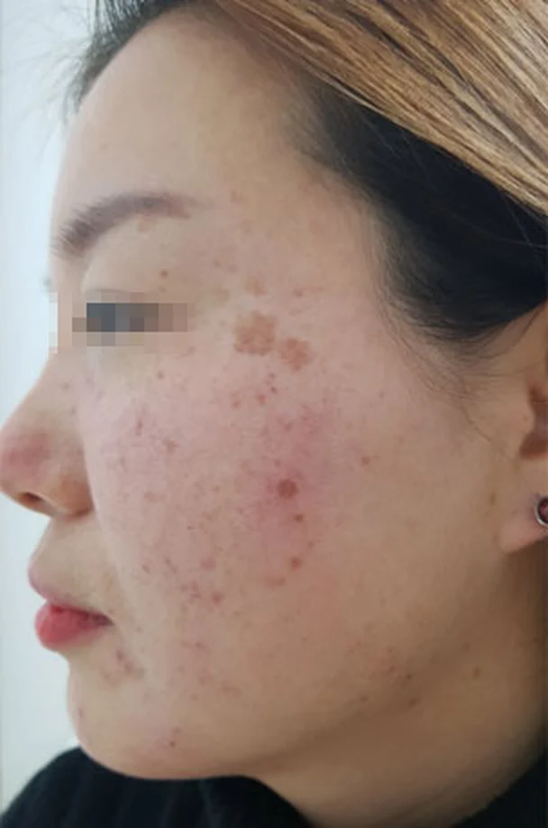
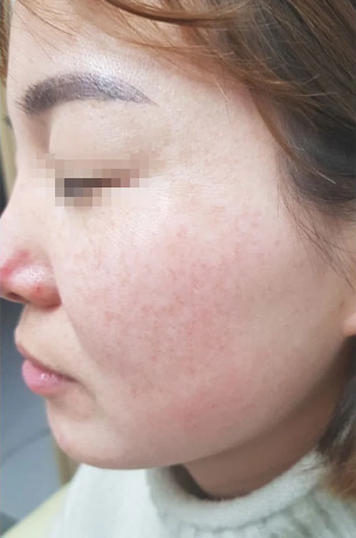
CASE 02Pigmented
532nm KTP
| Wavelength | Spot | Pulse | Fluence |
|---|---|---|---|
| 532nm | 3mm | 10ms | 6J |
Note넓은 부위는 3mm 스팟으로 간격을 두어 조사했으며, 이후 HALO 토닝 2회를 병행한 기록입니다.
Source — 제조사 카탈로그 「임상적용 3-1」
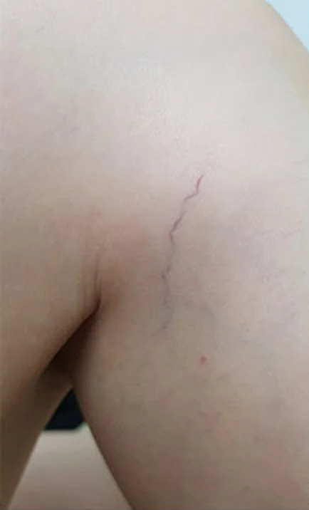
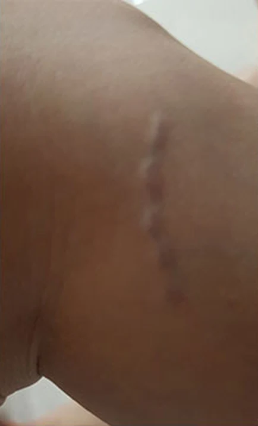
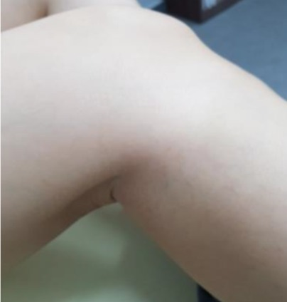
CASE 03Vascular
1064nm Nd:YAG
| Wavelength | Spot | Pulse | Fluence |
|---|---|---|---|
| 1064nm | 3mm | 10ms | 130J |
Note시술 1시간 후 부종, 1주 후 멍이 나타난 과정이 함께 기록된 사례입니다.
Source — 제조사 카탈로그 「임상적용 4-3」
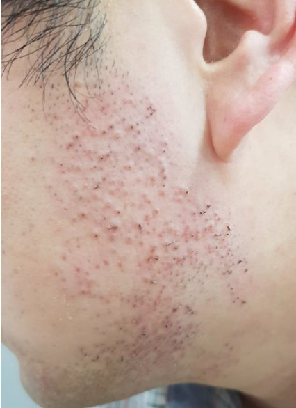
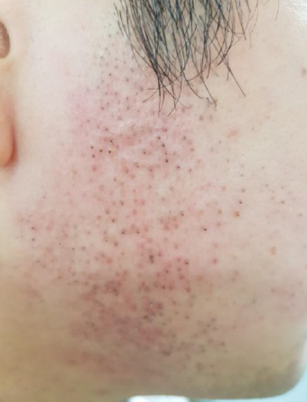
CASE 04Hair Removal
1064nm755nm
| Wavelength | Spot | Pulse | Fluence |
|---|---|---|---|
| 1064nm | 15mm | 30ms | 24J |
| 755nm | 18mm | 5ms | 14J |
Note파장별 조사 직후 모낭 주위에 나타난 반응을 기록한 사진이며, 시술 결과를 나타내지 않습니다.
Source — 제조사 카탈로그 「임상적용 6」
임상 자료 이용 안내